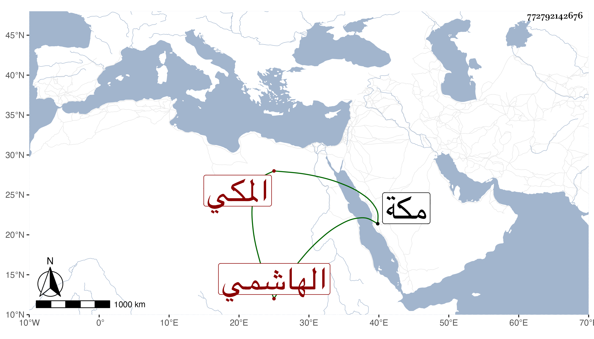

0902Sakhawi.DawLamic.ITO20230111-ara1.EIS1600.772792142676
Biography ID: 772792142676
204
جار الله ويسمى المحب أبا الفضل محمدا ولكنه بجار الله أشهر بن عبد العزيز بن عمر بن محمد بن محمد الهاشمي المكي ويعرف كسلفه بابن فهد سبط عم أبيه أبي بكر بن محمد بن فهد أمه كمالية . ولد في ليلة السبت لعشرين من شهر رجب سنة احدى وتسعين وثمانمائة بمكة ونشأ بها في كنف أبويه وحضر علي وهو في الرابعة في مجاورتي الرابعة من لفظي وبقراءة أبيه وغيره أشياء ثم سمع علي بعد ذلك أشياء وكذا أحضر على المحب الطبري الامام ختم مسلم وثلاثيات البخاري والربع الأول من تساعيات العز بن جماعة كل ذلك بعد المسلسل وأجاز له جماعة كعبد الغني بن البساطي وغيره ، ممن أجاز له عائشة ابنة ابن عبد الهادي والشمس محمد بن الشهاب البوصيري وغيره ممن سمع علي ابن الكويك .
